Wczoraj tj. 31.10.2021 stowarzyszenie WroSpace wraz z SP6ZWR wypuściło balon stratosferyczny. Balon nadawał sygnały aprs oraz obrazki SSTV.
Zdjęcia odbierałem programami RXSSTV oraz MMSSTV za pomocą prostego dipola półfalowego na pasmo 2m, sygnały leciały z wysokości około 3-30km z dystansu od 1km do ponad 100km od QTH. Poniżej znajduję się kilka z nich odebranych programem RXSSTV (wychodziły lepiej niż MMSSTV).
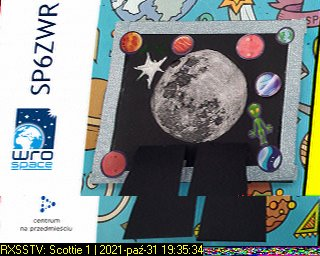 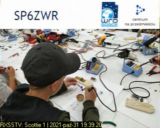 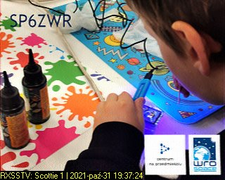 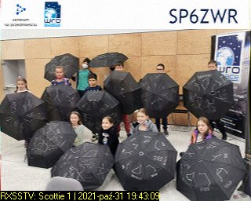 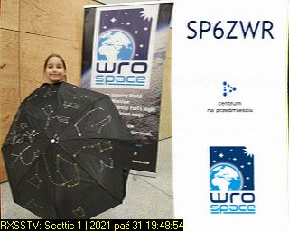 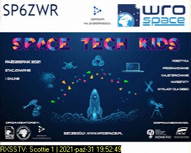 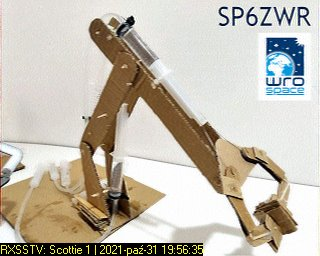
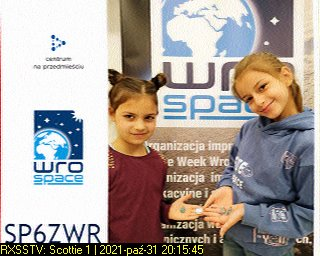
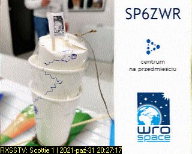
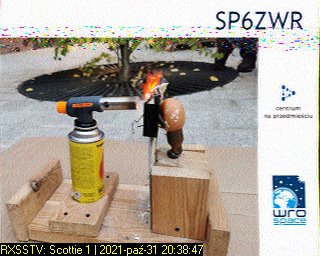
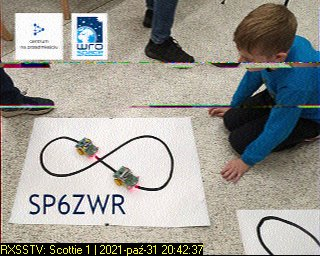
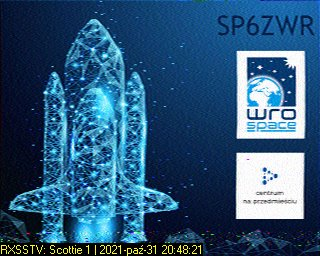
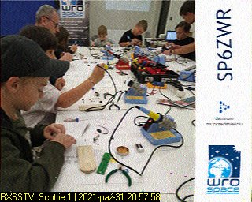
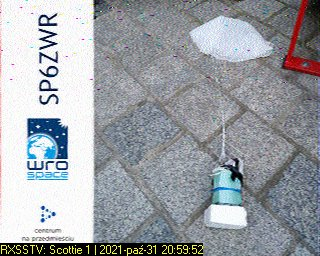
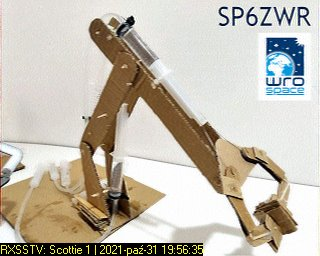
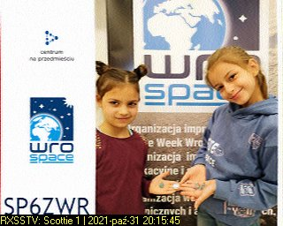
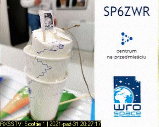
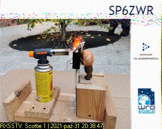
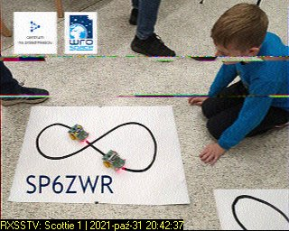
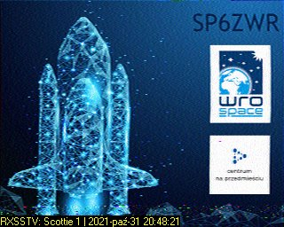
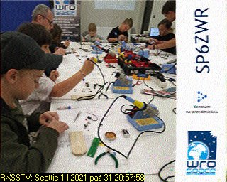
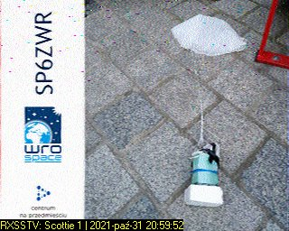